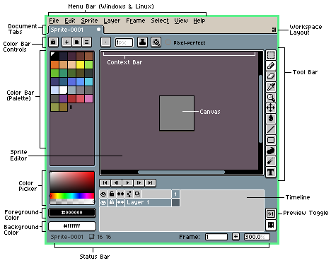
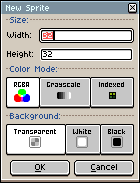
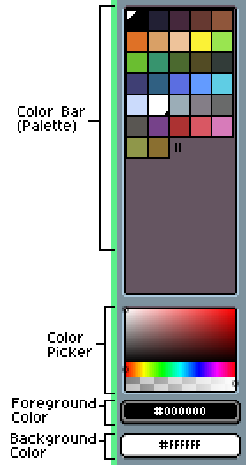
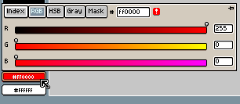

Rajzolj és animálj
pixel artot — Aseprite, első lépések
Az Aseprite a pixel art és a frame-by-frame animáció klasszikus szerkesztője. Itt nem egy kész képet alakítasz át — itt te magad rajzolsz, pixelről pixelre, és életre kelted a kis sprite-jaidat. Ebben a leckében végigmegyünk a teljes felületen, és a semmiből készítjük el az első rajzodat és animációdat.
Pontosan ez az Aseprite két szuperereje: rajzolás és animáció, egy helyen.
Mi az az Aseprite?
Az Aseprite egy asztali alkalmazás (Windows / macOS / Linux), amivel pixel artot és animációt készíthetsz — a klasszikus 8- és 16-bites korszak esztétikájában. Ez a pixel-szerkesztők „kézműves” fajtája: minden pixelt te raksz le, egy egész eszközkészlettel (ceruza, radír, festékesvödör), rétegeken és animációs kockákon dolgozva.
Ha láttad a PixelOver-leckét, fontos a különbség: a PixelOver egy kész képet (rajzot, 3D rendert) alakít át pixel-art stílusúvá, roncsolásmentes shaderrel — ott „betöltesz → beállítasz → exportálsz”.
Az Aseprite-ban a nulláról, kézzel rajzolsz — itt „rajzolj → színezz → animálj → exportálj”. A PixelOver átalakít, az Aseprite alkot. A kettő remekül kiegészíti egymást: a PixelOverrel gyorsan pixelesíthetsz egy meglévő illusztrációt, az Aseprite-ban pedig az utolsó pixelig kézben tartod az eredményt.
Mire jó?
- Sprite-ok és ikonok játékhoz — karakterek, tárgyak, csempék (tile-ok).
- Animációk — járásciklus, robbanás, pislogás —, mind frame-by-frame, beépített idővonallal.
- Pixel-pontos kontroll — minden képpontot te döntesz el; nincs „elmosódás”, nincs automatika.
Ez a tutorial az Aseprite hivatalos dokumentációját követi, magyarul, kibővítve interaktív demókkal, hogy ne csak olvasd, hanem ki is próbáld, amit tanulsz.
A kezelőfelület — gyors körkép
Mielőtt rajzolnánk, ismerjük meg a képernyőt. Az Aseprite felülete néhány jól elkülönülő zónából áll — ezekhez újra és újra visszanyúlunk:

| Zóna | Mit csinál |
|---|---|
| Menu Bar (menüsor) | Felül: File, Edit, Sprite, Layer, Frame, Select, View, Help. Minden parancs innen elérhető. |
| Tool Bar (eszköztár) | Jobb oldalt a függőleges ikonsor: ceruza, radír, festékesvödör, kijelölés, nagyító… (4. fejezet). |
| Sprite Editor + Canvas | A középső nagy terület: itt látod és rajzolod a sprite-ot. A Canvas maga a kép területe. |
| Color Bar (színsáv) | Bal oldalt a paletta + a Color Picker (színkör), legalul az Foreground és Background szín (5. fejezet). |
| Context Bar | A vászon fölötti vékony sáv: az épp aktív eszköz beállításai (pl. ecsetméret, Pixel-perfect mód). |
| Timeline (idővonal) | Lent: a rétegek (Layers) és az animációs kockák (Frames). Alapból rejtett — a Tab billentyűvel vagy a View ▸ Timeline paranccsal hozod elő (6–7. fejezet). |
| Status Bar (állapotsor) | Legalul: a sprite neve, mérete, az aktuális frame és annak időtartama — hasznos infók egy pillantásra. |
┌─ Menu Bar: File · Edit · Sprite · Layer · Frame · Select · View · Help ─┐ ├──────────┬───────────────────────────────────────────┬──────────┤ │ COLOR │ [ Context Bar — az aktív eszköz beállításai ] │ TOOL │ │ BAR │ │ BAR │ │ paletta │ VÁSZON (Canvas) │ ceruza │ │ + szín- │ – ide rajzolsz – │ radír │ │ picker │ │ vödör… │ │ FG / BG ├───────────────────────────────────────────┤ │ │ szín │ TIMELINE — rétegek (Layers) + kockák (Frames)│ │ ├──────────┴───────────────────────────────────────────┴──────────┤ └─ Status Bar: sprite neve · méret · aktuális frame · időtartam ───────┘
Megvan a térkép — most töltsünk be egy üres lapot, és kezdjünk rajzolni.
Új sprite létrehozása
Indítsd a programot, és hozz létre egy üres sprite-ot:
- Felső menü: File ▸ New…, vagy a Ctrl+N (macOS: ⌘+N) gyorsbillentyű.
- Felugrik a New Sprite ablak — állítsd be a méretet, a színmódot és a hátteret.

| Mező | Mit állíts be | Miért |
|---|---|---|
| Size › Width / Height | pl. 32 × 32 | A sprite mérete pixelben. Pixel arthoz kicsi a jó — 16, 32, 64 px tipikus. (A mezőkbe matematikai kifejezést is írhatsz, pl. 16*2.) |
| Color Mode › RGBA | ezt válaszd | Teljes szín + átlátszóság (alfa). Kezdőként szabadon használhatsz bármilyen színt — ez a legkényelmesebb. |
| Color Mode › Grayscale | szürke | Csak szürkeárnyalat + alfa. Ritka, speciális eset. |
| Color Mode › Indexed | paletta-alapú | Minden pixel egy paletta-indexre mutat (max 256 szín). A klasszikus, retró pixel-art mód — erről az 5. fejezetben. |
| Background | Transparent | Transparent = átlátszó lap (kockás minta), sprite-okhoz ez kell. A White/Black tömör háttér-réteget ad. |
Nyomd meg az OK gombot. Megnyílik egy üres, átlátszó vászon — készen áll az első pixelekre.
A rajzeszközök
A jobb oldali Tool Bar tartalmazza az eszközöket. A legfontosabb szabály: bal egérgomb = Foreground szín, jobb egérgomb = Background szín. Így két színnel is festhetsz váltogatás nélkül.
| Eszköz | Gyorsbillentyű | Mit csinál |
|---|---|---|
| Pencil (ceruza) | B | Szabadkézi rajz, pixelenként. A fő eszköz. |
| Eraser (radír) | E | Töröl (átlátszóra). |
| Paint Bucket (vödör) | G | Kitölti az összefüggő, azonos színű területet. |
| Eyedropper (pipetta) | I / Alt | Színt vesz le a vászonról (FG-be). Bármely eszköz közben az Alt ezt hívja. |
| Line / Rectangle / Ellipse | L / U / Shift+U | Egyenes, téglalap, ellipszis rajzolása. |
| Move (mozgatás) | V | A réteg tartalmának arrébb tolása. |
Amikor a Pencil aktív, a vászon fölötti Context Bar-on bekapcsolhatod a Pixel-perfect opciót. Ez automatikusan eltünteti a szabadkézi vonalak „dupla sarkait” (azokat a csúnya L-alakú lépcsőket), így tisztább, egyenletes vonalat húzol. Próbáld ki lent a demóban!
Egy igazi mini-vászon (16×16). Bal klikk a Foreground, jobb klikk a Background színnel fest. Válassz eszközt és színt, és rajzolj!
—
—
Kapcsold ki a Pixel-perfect-et, és húzz egy lapos átlós vonalat — megjelennek a dupla sarkok. Kapcsold vissza: eltűnnek. Pont ezt csinálja az igazi Context Bar-kapcsoló.
Színek és a paletta
A bal oldali Color Bar a színek otthona. Legalul a két aktív szín: a Foreground (bal klikk fest vele) és a Background (jobb klikk). A kettőt az X billentyűvel cseréled meg.

A paletta minden színének van egy indexe (0-tól 255-ig). A Foreground színmezőre kattintva felugrik a részletes szín-választó, ahol RGB- vagy HSB-csúszkákkal, illetve hexa-kóddal (pl. ff0000) is megadhatod a színt:

ff0000) állítod a pontos színt.RGB(A) módban a paletta csak egy kényelmes „szín-fiók”: bármilyen színt használhatsz, és ha a palettát módosítod, a kép nem változik (a pixelek a konkrét RGB-értéket tárolják).
Indexed módban minden pixel egy paletta-indexet tárol, nem színt. Ezért ha kicseréled vagy elforgatod a palettát, az egész kép átszíneződik — a sprite a palettától függ. Csak a palettában lévő színeket használhatod (a paletta szerkesztése: Edit Palette gomb / F4). Próbáld ki a demóban, mi a különbség!
Ugyanaz a kis slime, kétféle színmódban. Nyomd meg a „Paletta forgatása” gombot, és figyeld a képet:
Indexed: a paletta forgatása átszínezi a slime-ot — a pixelek indexre mutatnak. RGB: ugyanaz a gomb nem változtat semmit a képen, mert a pixelek a konkrét színt tárolják.
Rétegek és a Timeline
Az alsó Timeline (idővonal) az Aseprite szíve. Egy rácsot látsz benne: a sorok a rétegek (Layers), az oszlopok az animációs kockák (Frames). A kettő metszéspontja egy cel — ez tárolja a tényleges rajzot.
| Fogalom | Mit jelent |
|---|---|
| Layer (réteg) | Mint a fóliák egymáson: külön rajzolhatsz pl. hátteret, karaktert, fényeket. A Background egy speciális, tömör (nem átlátszó) réteg. A szem-ikon = láthatóság, a lakat = zárolás. |
| Frame (kocka) | Az animáció egy pillanatképe. Mindegyiknek van időtartama ezredmásodpercben — ez szabja meg a sebességet (FPS). |
| Cel | Egy réteg és egy frame keresztezése = ahova ténylegesen rajzolsz. Lehet üres (Empty Cel), tartalmas (Cel with Content), vagy linkelt (Linked Cels — ugyanaz a kép több frame-en, egyszerre szerkeszthető). |
| Tag (címke) | Frame-tartomány elnevezése (pl. Walk, Run) — így egy sprite-ban több animációt is elkülöníthetsz. |
Az első animáció
Az animáció lényege: rajzolj több frame-et, mindegyiken kicsit más pózban, majd játszd le őket gyorsan egymás után. A teljes folyamat:
- Rajzold meg az első kockát a vászonra.
- Adj hozzá új frame-et: Frame ▸ New Frame, vagy Alt+N. (Az új kocka az előző másolatából indul — onnan módosítod tovább.)
- Lépkedj a kockák között a , és . (vessző/pont) billentyűkkel, és rajzold meg a következő pózt.
- Kapcsold be az Onion skin-t, hogy áttetszően lásd az előző/következő kockát — így könnyebb folytonos mozgást rajzolni.
- Játszd le: Enter (vagy a Timeline ▶ gombja). A sebességet a frame-ek időtartama adja.
Egy 8 kockás pattogó-labda animáció. Indítsd el, állítsd a sebességet, és kapcsold be az onion skint!
Az onion skin az előző kockát kékes, a következőt pirosas árnyalattal mutatja a háttérben — pont mint az igazi Aseprite. Lépj kézzel a ,/. gombokkal, és figyeld a „szellemképeket”.
Navigáció, mentés és export
Navigáció a vásznon
- Nagyítás: Z (nagyító eszköz), vagy +/−, vagy az egérgörgő.
- Pásztázás (pan): tartsd a Space-t és húzd az egeret (vagy a középső egérgomb).
Mentés vs. exportálás
Ez a két dolog nem ugyanaz — és érdemes mindig a natív formátumban menteni a munkát:
File ▸ Save (Ctrl+S) → .aseprite minden adat megmarad (rétegek, kockák, tag-ek) File ▸ Save As… → .png / .gif egy kép / animált GIF — megosztáshoz File ▸ Export ▸ Sprite Sheet → atlasz az összes kocka egy képen — JÁTÉKMOTORHOZ
Ha játékot fejlesztesz, az File ▸ Export ▸ Export Sprite Sheet a kulcs: az összes animációs kockát egyetlen atlasz-képbe rendezi. Pontosan ezt tölti be a játékmotor egy texture atlas-ként, és lépteti a kockáit — ahogy a Bevy animációk és a Bevy sprite leckében is láthatod. Itt rajzolod, ott életre kel a játékban.
.aseprite-ként.
Összefoglaló & merre tovább?
Gratulálok — végigvitted az Aseprite teljes alap-munkafolyamatát! Amit megtanultál:
- Felület: Menu / Tool / Color Bar, Canvas, Timeline, Status Bar.
- Új sprite: File ▸ New… — méret, Color Mode (RGBA), Background = Transparent.
- Rajz: Pencil/Eraser/Bucket/Picker, bal=FG / jobb=BG, Pixel-perfect.
- Színek: paletta + FG/BG (X csere), RGB vs. Indexed mód.
- Réteg & kocka: Layers / Frames / Cels a Timeline-on.
- Animáció: új frame (Alt+N), onion skin, lejátszás (Enter).
- Mentés/Export:
.asepriteforrás, PNG/GIF/Sprite Sheet kimenet.
- Rajztechnikák — line art, kézi anti-aliasing, árnyékolás (shading), körvonalazás.
- Dithering kézzel — átmenetek kevés színnel (a PixelOver-dithering párja, csak itt te rajzolod).
- Animáció mélyebben — járásciklus, tag-ek, loop / ping-pong, frame-időzítés.
- Tilemap editor — csempe-alapú pályarajzolás (Aseprite 1.3+).
- Export pipeline → Bevy — Sprite Sheet-től a kész játék-animációig.
A legjobb tipp a végére: csak rajzolj. A pixel art az ismétlésből jön — nyiss egy 32×32-es lapot, és csinálj egy kis tárgyat (kard, szív, érme), majd próbálj belőle 4 kockás animációt. A fenti demókban máris mindent kipróbálhatsz, ami ehhez kell.